Profiling PHP
A dive into your application
What is Profiling?
Wikipedia
profiling is a form of dynamic program analysis that measures, for example, the space (memory) or time complexity of a program, the usage of particular instructions, or the frequency and duration of function calls. Most commonly, profiling information serves to aid program optimization.
So... Dynamic Program Analysis?
Yeah...
Lets first look at it's counterpart...
Static analysis
Wikipedia
Static program analysis is the analysis of computer software that is performed without actually executing programs
The term is usually applied to the analysis performed by an automated tool, with human analysis being called program understanding, program comprehension or code review.
Static Analysis Tools
There are a set of tools which perform static code analysis.
These tools can be integrated within an automated build.
There is a nice page containing a predefined set of tools for a build to be found at Jenkins PHP
But...
These tools only analyse how your code is structured, not how it behaves.
Dynamic analysis
Wikipedia
The analysis of computer software that is performed by executing programs on a real or virtual processor.
For dynamic program analysis to be effective,
the target program must be executed with sufficient test inputs to produce interesting behavior.
Use of software testing measures such as code coverage helps ensure that an adequate slice of the program's set of possible behaviors has been observed.
Callstack
A callstack is the order in which statements are exectuted.
An example commonly known, is an exception trace. This trace shows all the statements executed before an exception is thrown.
Callgraph
A callgraph is a visual representation of a callstack.
In large applications this graph can give you better insight on how an application is wired.
Profiling data
Usually, the data gathered with a profiler can be represented in stacks or graphs.
They can include information regarding memory- and cpu-usage.
Why?
Reasons
- Debugging CPU performance
- Debugging memory performance
- Debugging IO performance
- See which function is called how many times
- Gain insight of the black box that is the application
Reasons
- We live in a digital age where we want everything instantly.
- According to a case study from Radware, 51 percent of online shoppers in the U.S claimed if a site is too slow they will not complete a purchase.
- Nowadays, search engine indexing also accounts for page load.
The psychology of web performance
SEO 101: How important is site speed in 2014?
Case study from Radware
Warning!
Premature optimization is the root of all evil
-- Donald Knuth
Only perform optimization when there is a need to.
Cause of issues
Common issues
- Network slowdown
- Datastore slowdown
- External resources (API, Filesystems, Network sockets, etc)
- Bad code(tm)
Active vs Passive
Active profiler
- Used during development
- Gather more information than passive profilers
(like variables/values) - Performance impact is bigger
- Should _NOT_ be used in production
- Example: Xdebug
Passive profiler
- Minimal impact on performance
- Gathers less but sufficient information to diagnose issues
(Only records function calls and cpu + mem) - Examples: XHProf, New Relic, Blackfire.io
Xdebug
Xdebug
- Generates cachegrind files (like Valgrind for C)
- Can be analysed by KCacheGrind among others
- Cachegrind files are relatively big in size
- Also a developer tool for breakpoints and remote debugging
- Active profiler
Enable xdebug profiling
# php.ini settings
xdebug.profiler_enable=1
xdebug.profiler_output_dir=/path/to/store/snapshots
xdebug.profiler_enable_trigger=1Xdebug with KCacheGrind
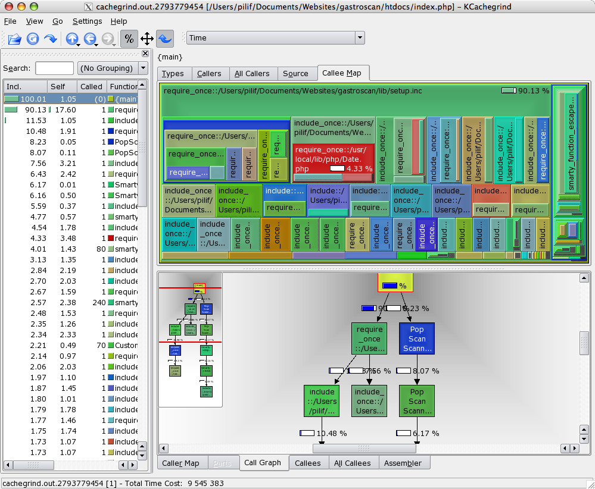Xdebug in phpstorm
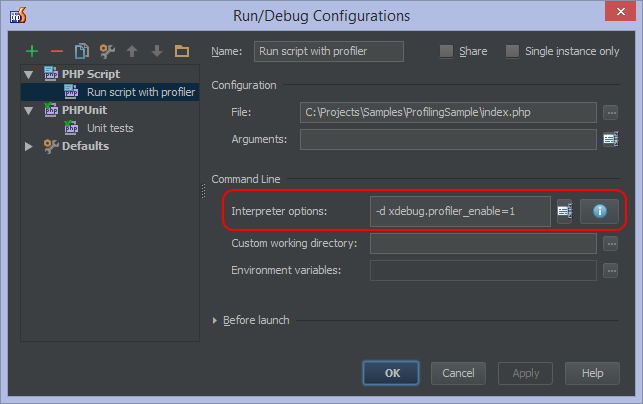Xdebug in PhpStorm
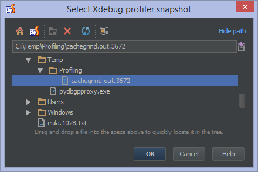Xdebug in PhpStorm
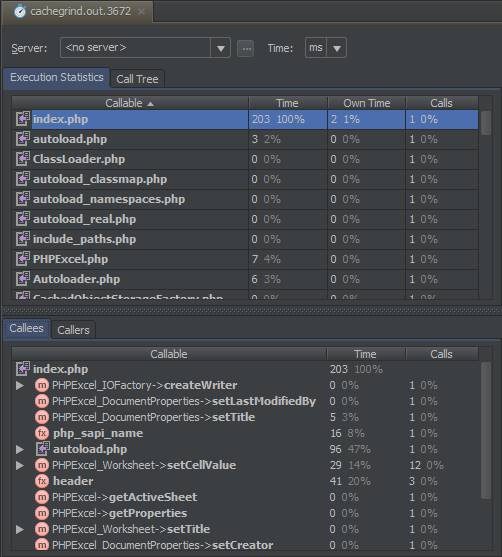Xdebug in PhpStorm
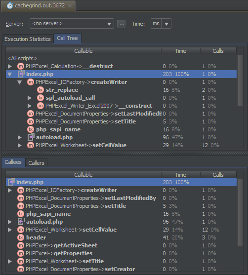XHProf
XHProf
- Developed by Facebook and released as open-source in 2009
- PECL extension
- Lightweight for being a passive profiler
- Includes webgui for reviewing and comparing profiling data
Installation
# Linux (using apt or yum)
apt-get install -y php5-xhprof
# OSX (using homebrew)
brew install php56-xhprof
# For Windows, use PECL or download a .dll somewhere, or compile for your own
Wordpress example
// index.php
xhprof_enable(XHPROF_FLAGS_CPU + XHPROF_FLAGS_MEMORY);
/** Loads the WordPress Environment and Template */
require( dirname( __FILE__ ) . '/wp-blog-header.php' );
$xhprof_data = xhprof_disable();
include_once 'xhprof_lib/utils/xhprof_lib.php';
include_once 'xhprof_lib/utils/xhprof_runs.php';
$xhprof_runs = new XHProfRuns_Default();
$run_id = $xhprof_runs->save_run($xhprof_data, "xhprof_foo");
Callstack
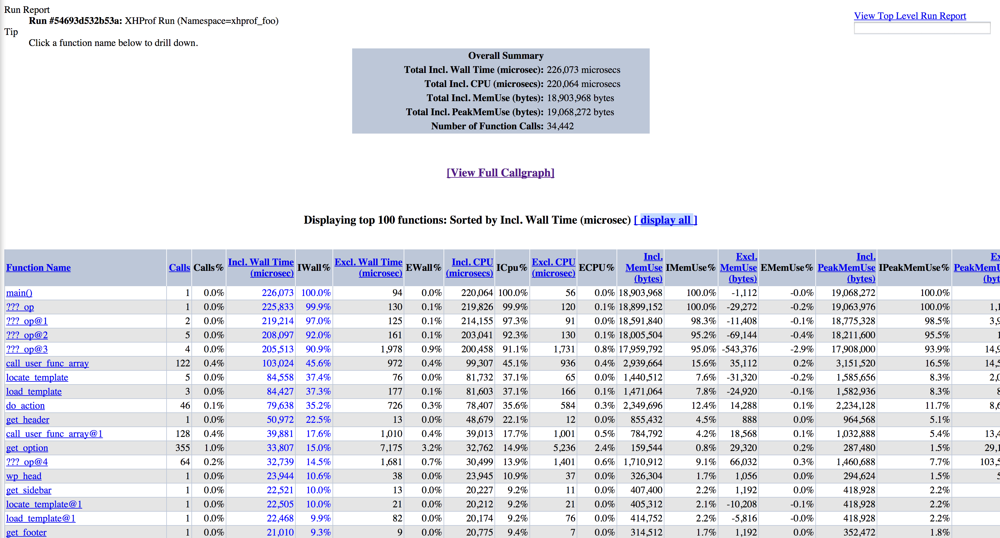Callgraph

Callgraph
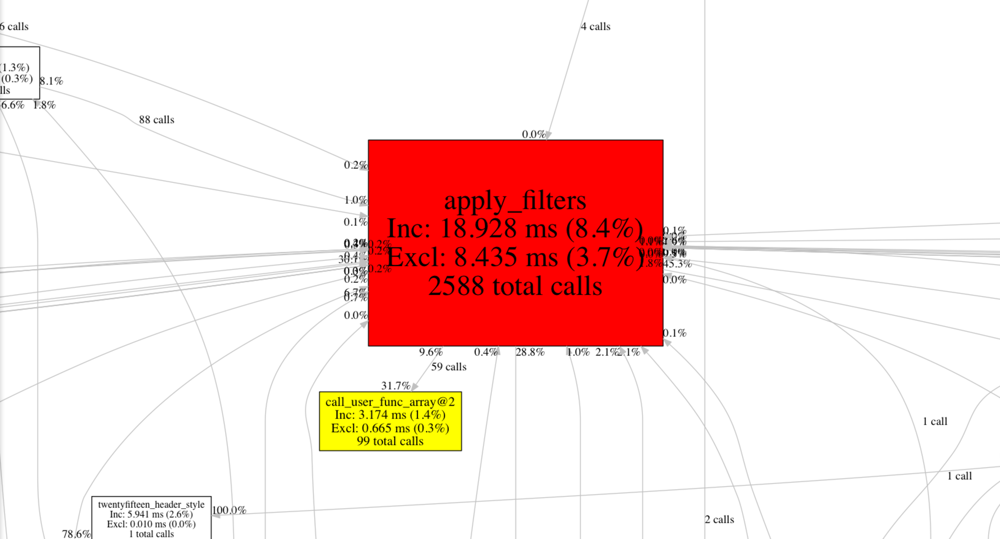Callgraph
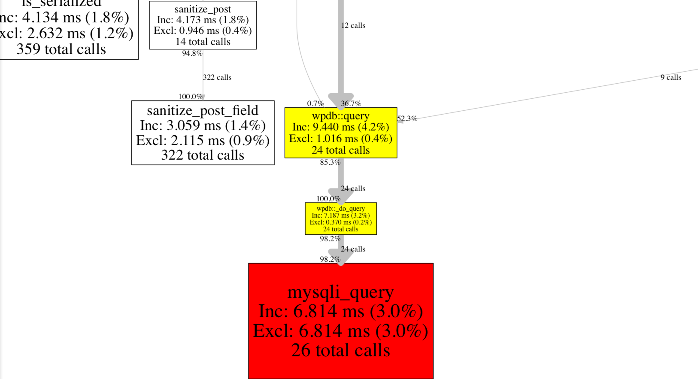Useful tools
-
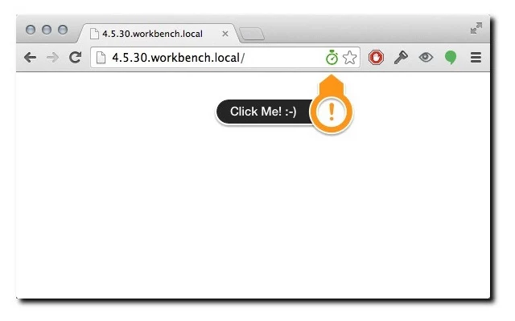
- XHProf Helper for Chrome
- XHProf Helper for Firefox
- Sets $_COOKIE['_profile'] to 1
XHGui
- Web frontend for profile data
- Requires MongoDB
- Shows callstacks
- Shows callgraphs
- Can compare different runs
XHGui
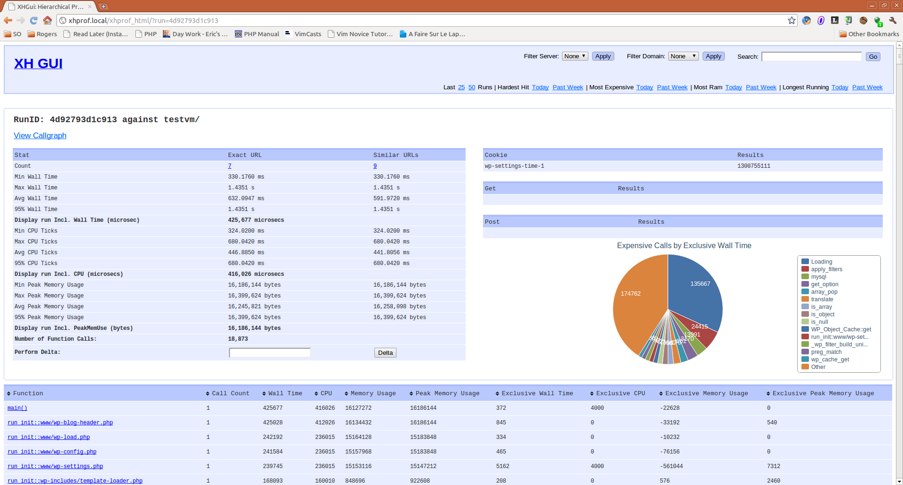XHGui
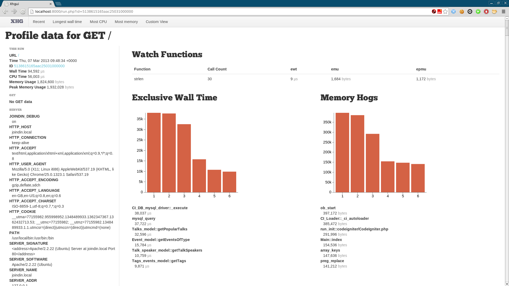XHGui Compare
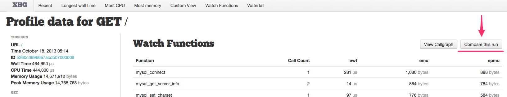XHGui Compare
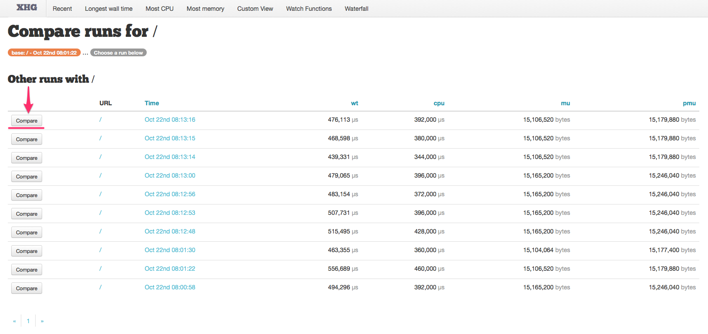XHGui Compare difference
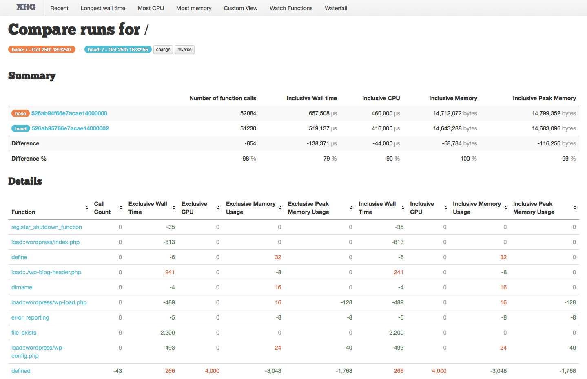XHGui Callstack
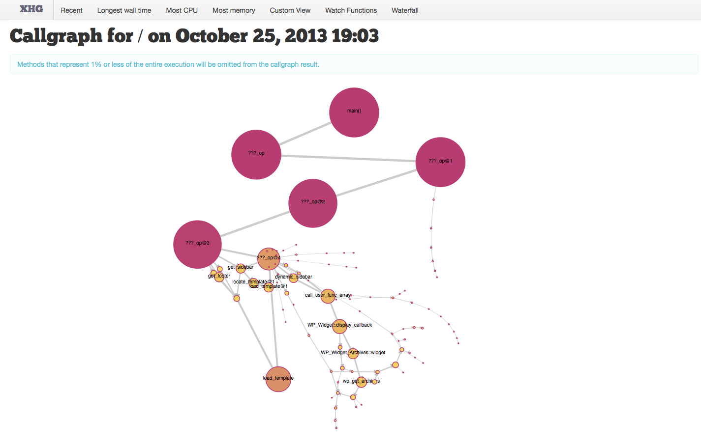Link0
Link0/profiler
- Focused on XHProf
- Has multiple persistence layers for storing profiles
- Memory
- Flysystem
- Zend\Db\Adapter
- MongoDB (work in progress)
- Available on composer/packagist
- Fully Object-orientated
- 100% code coverage
- http://github.com/link0/profiler
Getting started
Bootstrapping the profiler
$profiler = new \Link0\Profiler\Profiler();
$profiler->start();
print_r($profiler->stop());Adding a PersistenceHandler
$persistenceHandler = new \Link0\Profiler\PersistenceHandler\MemoryHandler();
$profiler = new \Link0\Profiler\Profiler($persistenceHandler);Flysystem example
$filesystemAdapter = new \League\Flysystem\Adapter\Local('/tmp/profiler');
$filesystem = new \Link0\Profiler\Filesystem($filesystemAdapter);
$persistenceHandler = new \Link0\Profiler\PersistenceHandler\FilesystemHandler($filesystem);
$profiler = new \Link0\Profiler\Profiler($persistenceHandler);Future?
*exciting sounds*
Some ideas
- Enable on production with sampling
- Aggregate all profiles to centralized machine/cluster
- Integrate into continuous deployment
- Run profiling on acceptance environment
- Alert when compared differences surpass threshold
- Codeception integration
- Find business use-cases that are slow
- Make a case for refactoring to the business
- Focus on the customers emulated experience
Any Questions?
Questions? I <3 feedback
- Joind.in: https://joind.in/talk/view/13644
- GitHub: http://github.com/dennisdegreef
- Twitter: @dennisdegreef
- IRC: link0 on Freenode